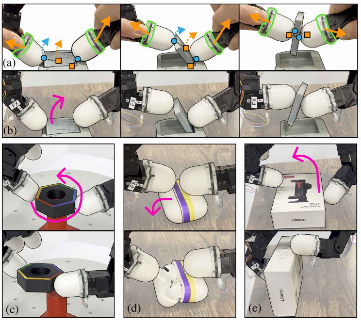
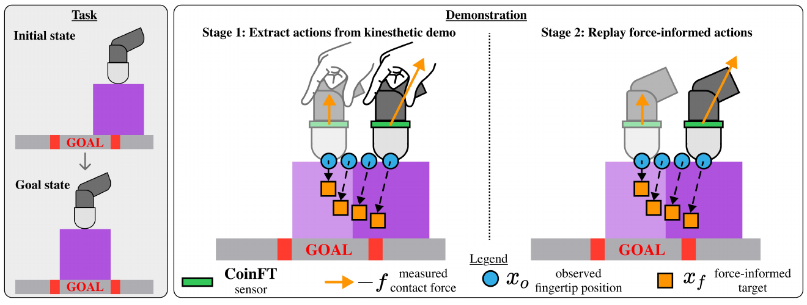
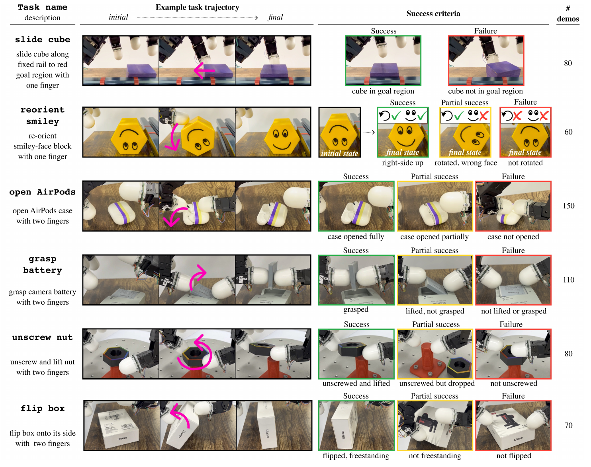
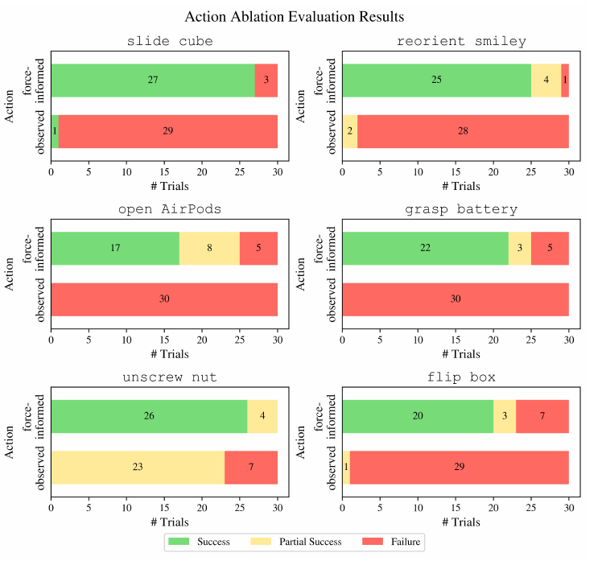
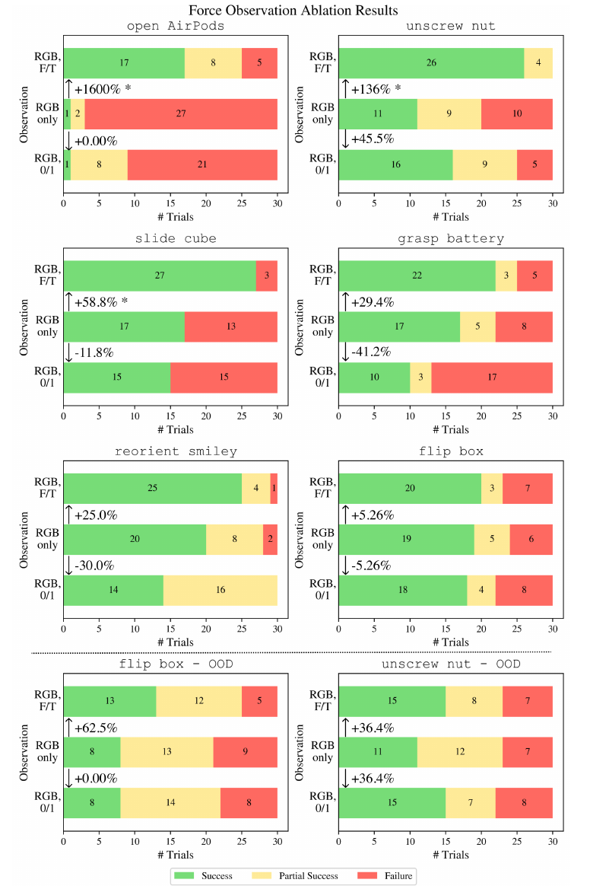
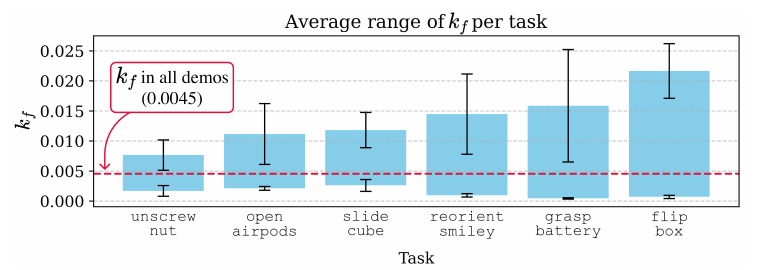
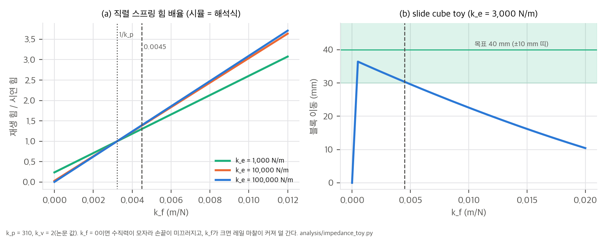
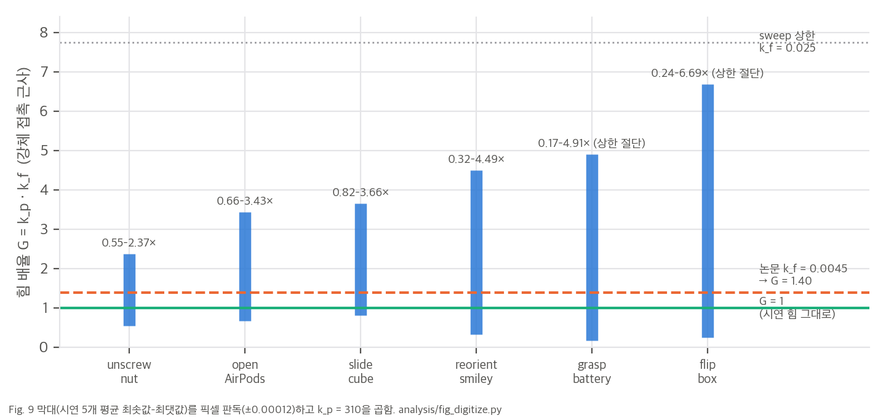
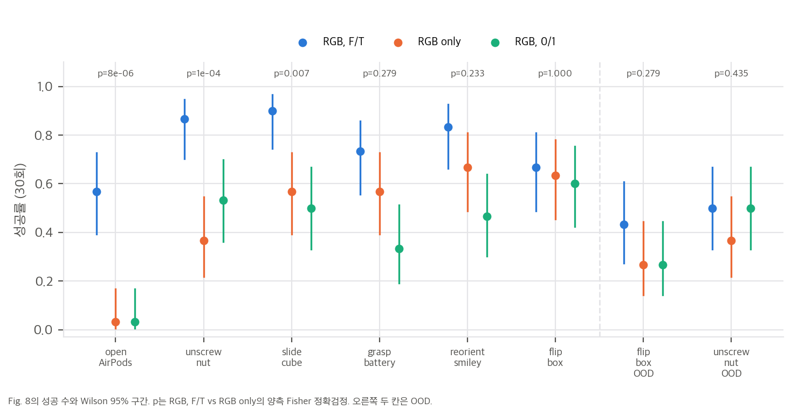

논문 Fig. 1: kinesthetic 시연의 관측 위치(파랑)를 측정한 접촉력(주황 화살표)만큼 밀어 force-informed 목표(주황 사각형)를 만든다.

논문 Fig. 3: Stage 1에서 force-informed 목표를 뽑고, Stage 2에서 재생해 사람 손 없는 시연을 얻는다.
©·copyright 검색 0건, "IEEE"는 참고문헌에만 있음). 출판된 RA-L 판은 IEEE 판이므로, 이 분석의 그림은 arXiv v2에서만 가져왔습니다.한 줄 요약: 로봇손 손끝 밑에 6축 힘·토크 센서를 달고 사람이 손가락을 직접 잡고 움직이는 kinesthetic 시연을 받은 뒤, 측정한 접촉력만큼 관측 위치를 물체 쪽으로 밀어 넣은 force-informed 위치 목표 x_f = x_o + k_f f를 행동으로 씁니다. 임피던스 제어로 이 목표를 추종하면 시연의 힘이 재현됩니다.
논문이 내세우는 기여는 두 가지입니다(Sec. I).
Stage 1 kinesthetic 시연: 사람이 손끝 센서 위쪽을 잡고 두 손가락(엄지·검지)으로 과제를 수행
기록 = 손끝 관측 위치 x_o,1..T, 접촉력 f_1..T (CoinFT, 손가락마다 6축)
→ force-informed 목표 x_f,t = x_o,t + k_f f_t (식 3, k_f = 0.0045)
Stage 2 재생: 로봇이 x_f,1..T를 데카르트 임피던스 제어(식 1–2)로 추종
기록 = 새 관측 위치 x*_o, 접촉력 f*, 모멘트 m*, 손목 카메라 영상 I (사람 손이 없는 장면)
학습 Diffusion Policy: 관측 = ResNet18 영상 특징 + 손가락별 f*, m* (proprioception 없음)
출력 = x_f (force-informed 목표) → 같은 임피던스 제어기로 실행
손가락 하나의 데카르트 제어력은 F = k_p (x_d − x_c) − k_v ẋ_c(식 1)이고, 관절 토크 τ = Jᵀ F + g(식 2)로 명령합니다. 자유 공간에서 목표 궤적을 따라가도록 이득을 맞췄고 k_p = 310, k_v = 2입니다(v2에서 처음 보고된 값, 단위 표기 없음. N/m, N·s/m로 읽음).
식 1의 첫 항을 스프링으로 보고, 준정적 운동을 가정해 같은 모델로 목표를 계산합니다.
x_f = x_o + k_f f (f: 손가락이 물체에 가한 힘, k_f: 손으로 맞춘 스칼라 "강성 계수")
시연 중 사람이 손끝으로 면을 세게 누르든 약하게 누르든, 관측 위치 x_o는 같습니다(Fig. 2). 그래서 x_o를 그대로 재생하면 힘이 재현되지 않습니다. x_f는 힘이 클수록 면 안쪽으로 더 들어가 있어서, 임피던스로 추종하면 그만큼 밀어 줍니다. 저자들은 식 3이 연한 접촉과 마찰을 모델링하지 않지만 많은 과제에서 충분했다고 씁니다. 모든 과제에서 k_f = 0.0045를 썼습니다.
우리 계산: 식 1과 식 3을 함께 쓰면, 강체 접촉에서 재생 힘은 시연 힘의 k_p·k_f = 310 × 0.0045 = 1.40배입니다. 시연 힘을 그대로 재현하는 값은 k_f = 1/k_p = 0.0032입니다. v1은 K_f = (1/220)·I₃라고 썼는데, 이는 강성 220의 역수 꼴입니다(03 §1).
CNN 기반 Diffusion Policy를 씁니다. 관측 지평 2, 행동 예측 16, 실행 8, 1000 epoch이고, 30 Hz로 기록해 10 Hz로 내려 학습합니다. 영상은 128²이고 grasp battery만 256²입니다. 관측에는 영상 특징과 Stage 2의 손가락별 힘·모멘트가 들어가고 손가락 위치(proprioception)는 넣지 않습니다. v1에는 proprioception을 넣으면 성능이 크게 떨어진다는 절제(v1 Fig. 9)가 있었는데, v2에서는 빠졌습니다(§4.2-3).
Allegro Hand, 손목 RealSense D435(어안렌즈를 달아 손 작업공간 전체를 봄), 엄지와 검지 밑의 CoinFT 6축 힘·토크 센서 2개입니다. 사람이 편하게 시연할 수 있는 손가락이 두 개까지라서, 과제는 한 손가락(외부 접촉 활용)이나 두 손가락입니다.
| 과제 | 내용 | 시연 수 | 부분 성공 기준 |
|---|---|---|---|
| slide cube | 한 손가락으로 큐브를 레일 위 목표 구역까지 밀기 | 80 | 없음 |
| reorient smiley | 한 손가락으로 육각 블록을 바로 세우기 | 60 | 뒤집었지만 방향이 틀림 |
| open AirPods | 두 손가락으로 케이스 열기 | 150 | 일부만 열림 |
| grasp battery | 얇은 카메라 배터리 집기 | 110 | 들었지만 못 잡음 |
| unscrew nut | 너트를 풀어 들기 | 80 | 풀었지만 떨어뜨림 |
| flip box | 상자를 옆으로 세우기 | 70 | 세웠지만 자립 못 함 |
시연은 합쳐 550개입니다. 과제마다 같은 무작위 초기 배치 30개로 모든 정책을 평가합니다. OOD는 unscrew nut(너트가 360–900° 더 감김)과 flip box(100 g 더 무거움) 두 가지입니다.

논문 Fig. 4: 여섯 과제, 성공·부분 성공 기준, 시연 수.
| 과제 | force-informed (성공/부분/실패) | 관측 위치 (성공/부분/실패) |
|---|---|---|
| slide cube | 27 / 0 / 3 | 1 / 0 / 29 |
| reorient smiley | 25 / 4 / 1 | 0 / 2 / 28 |
| open AirPods | 17 / 8 / 5 | 0 / 0 / 30 |
| grasp battery | 22 / 3 / 5 | 0 / 0 / 30 |
| unscrew nut | 26 / 4 / 0 | 0 / 23 / 7 |
| flip box | 20 / 3 / 7 | 0 / 1 / 29 |
04 C1).03 §3).
논문 Fig. 7: force-informed 행동 vs 관측 위치 행동(각 30회).
모든 정책은 force-informed 목표로 학습했고, 관측만 바꿨습니다. Fig. 7의 force-informed 정책과 Fig. 8의 RGB, F/T 정책은 여섯 과제 모두 같은 숫자라서, 같은 평가를 두 그림에 썼습니다.
| 과제 | RGB, F/T | RGB only | RGB, 0/1 | F/T vs RGB-only Fisher p |
|---|---|---|---|---|
| open AirPods | 17 | 1 | 1 | 8×10⁻⁶ * |
| unscrew nut | 26 | 11 | 16 | 1.4×10⁻⁴ * |
| slide cube | 27 | 17 | 15 | 0.0074 * |
| grasp battery | 22 | 17 | 10 | 0.28 |
| reorient smiley | 25 | 20 | 14 | 0.23 |
| flip box | 20 | 19 | 18 | 1.00 |
| flip box OOD | 13 | 8 | 8 | 0.28 |
| unscrew nut OOD | 15 | 11 | 15 | 0.43 |
(30회 중 성공 수, 우리 재계산)
04 C2–C3).
논문 Fig. 8: 관측 절제(RGB, F/T / RGB only / RGB, 0/1)와 OOD 두 가지.
과제마다 시연 5개를 골라, k_f를 0.0045에서 시작해 0.0001씩 올리고 내리며 재생이 실패할 때까지 반복했습니다(상한 0.025). 막대는 성공한 k_f 범위의 평균 최솟값–최댓값이고, 오차 막대는 표준편차입니다.
| 과제 | k_f 범위 (판독) | 힘 배율 G = k_p·k_f | 최대/최소 비 |
|---|---|---|---|
| unscrew nut | 0.0018–0.0076 | 0.55–2.37× | 4.3 |
| open AirPods | 0.0021–0.0111 | 0.66–3.43× | 5.2 |
| slide cube | 0.0026–0.0118 | 0.82–3.66× | 4.5 |
| reorient smiley | 0.0010–0.0145 | 0.32–4.49× | 13.9 |
| grasp battery | 0.0006–0.0158 | 0.17–4.91×, 상한 절단 | 28.8 이상 |
| flip box | 0.0008–0.0216 | 0.24–6.69×, 상한 절단 | 27.3 이상 |
(픽셀 판독 오차 ±0.00012, 빨간 기준선 0.0045를 0.00458로 읽어 검증. analysis/fig_digitize.py)
03 §2).04 C6).
논문 Fig. 9: 과제별 성공한 k_f 범위(시연 5개 평균, 오차 막대는 SD).
DexForce는 대규모 데이터 수집에는 맞지 않을 수 있다고 씁니다. 사람이 동시에 다룰 수 있는 손가락이 두 개뿐이고, 식 3은 연한 접촉과 마찰을 모델링하지 않습니다. 향후 과제로, 손 전체를 쓰면서 직접 촉각 피드백을 주는 다른 시연 방식을 들었습니다.
03 §1).04 §2).04 C7). 시간이나 실제 시도 횟수는 보고되지 않았습니다.스크립트: analysis/table_check.py(그림 수치 재계산, 결과 table_check_results.json), analysis/fig_digitize.py(Fig. 9 픽셀 판독, fig9_digitize_results.json), analysis/impedance_toy.py(식 1–3 toy, impedance_toy_results.json). 모두 numpy·scipy 단일 스레드로 몇 초 안에 끝납니다.
재생할 때 손끝이 접촉면에 막혀 시연 때와 같은 자리(x_c ≈ x_o)에 멈춘다고 하면, 식 1의 정상 상태 힘은 다음과 같습니다.
F = k_p (x_f − x_c) = k_p (x_o + k_f f − x_o) = k_p k_f · f
v2의 값(k_p = 310, k_f = 0.0045)이면 G = k_p k_f = 1.395이고, 재생 힘은 시연 힘의 1.4배입니다. 논문이 식 3을 정당화한 "식 1과 같은 스프링" 논리를 그대로 따르면 k_f = 1/k_p = 0.00323이어야 G = 1입니다. v1의 K_f = I₃/220(= 0.004545)은 "강성 220의 역수" 꼴이고, v2 k_p와의 곱은 1.41입니다. v1 시점에 다른 k_p를 썼거나, 처음부터 1.4배 증폭을 의도했을 수 있습니다. 논문만으로는 어느 쪽인지 알 수 없습니다(가설).
손끝 패드나 물체가 강성 k_e로 변형되면, 시연의 관측 위치 x_o에 이미 침투 f/k_e가 들어 있습니다. 재생에서는 임피던스 스프링(k_p)과 접촉 스프링(k_e)이 직렬로 걸리므로 다음이 성립합니다.
G(k_f, k_e) = (1/k_e + k_f) / (1/k_p + 1/k_e)
toy T1은 점 질량 손끝을 k_p = 310, k_v = 2로 적분해 정상 상태 힘을 쟀고, 위 식과 소수점 셋째 자리까지 같았습니다.
| k_e (N/m) | k_f = 0 | k_f = 1/k_p | k_f = 0.0045 | k_f = 0.01 |
|---|---|---|---|---|
| 1,000 | 0.237 | 1.000 | 1.302 | 2.603 |
| 3,000 | 0.094 | 1.000 | 1.358 | 2.903 |
| 10,000 | 0.030 | 1.000 | 1.383 | 3.037 |
| 100,000 | 0.003 | 1.000 | 1.394 | 3.094 |

Fig. 9의 k_f 범위에 k_p = 310을 곱하면(강체 근사), "재생 힘이 시연 힘의 몇 배일 때 과제가 성공하는가"가 됩니다.

해석:
toy T2는 "위에서 눌러 끌기" 판 slide cube입니다. 손끝이 블록 윗면을 눌러 마찰로 끌고, 블록은 레일 마찰을 받습니다. 블록이 움직이려면 μ_f N > μ_r (N + m g)이어야 합니다(μ_f = 0.8, μ_r = 0.3, m = 50 g, N_min = 0.29 N, 시연 수직력 2 N). 시연을 x_f로 재생하며 k_f를 훑었습니다.
| 접촉 강성 k_e | k_f = 0 블록 이동 | k_f = 0.0045 블록 이동 | 성공 k_f 창 (목표 40 mm ± 10 mm) |
|---|---|---|---|
| 1,000 N/m | 36.1 mm | 30.8 mm | 0 – 0.0050 |
| 3,000 N/m | 0.0 mm | 30.4 mm | 0.0005 – 0.0045 |
| 30,000 N/m | 0.0 mm | 30.1 mm | 0.0005 – 0.0045 |
toy의 질량, 마찰계수, 패드 강성, 목표 허용 오차는 모두 가정입니다. 결과는 경향으로만 읽어야 합니다.

analysis/table_check.py, analysis/fig_digitize.py)| # | 주장 (출처) | 재계산 | 판정 |
|---|---|---|---|
| C1 | force-informed 정책 평균 76%, 관측 위치는 near-zero (Abstract, Fig. 7) | 137/180 = 76.1% (과제 평균도 76.1%). 관측 위치 1/180, 부분 성공 26. 과제별 Fisher p = 8×10⁻¹³ – 6×10⁻⁷ | ✅ |
| C1b | 성공률 범위 90%(slide)–57%(AirPods) (Sec. IV Q1) | 27/30, 17/30 | ✅ |
| C1c | Fig. 7 force-informed = Fig. 8 RGB, F/T | 여섯 과제의 (성공, 부분, 실패)가 모두 같음 | 같은 평가를 두 그림에 사용 |
| C2 | Fig. 8 화살표 상대 변화율 16개 (+1600%, +136%, +58.8% …) | 성공 수 비율로 16개 모두 재현(반올림 이내) | ✅ |
| C3 | * = Fisher 정확검정 α = 0.05 (v2 Fig. 8) | AirPods 8×10⁻⁶, nut 1.4×10⁻⁴, slide 0.0074만 유의. v1의 two-proportion z-test로도 같은 세 개. Holm 보정 뒤에도 유지 | ✅ |
| C4 | 힘 관측은 성능을 해치지 않고 모든 과제에서 개선 (Sec. IV Q2) | 8개 비교 모두 F/T ≥ RGB-only(부호 검정 단측 p = 0.004). 과제별 유의는 3/6, flip box는 20 대 19 | 방향은 ✅, "모든 과제 개선"은 점추정 |
| C4b | RGB, 0/1은 RGB-only와 같거나 나쁘다 (Sec. IV Q2) | 나쁨 4, 같음 2, 나음 2(nut 16 대 11, nut OOD 15 대 11) | ⚠️ 일부 반례 |
| C4c | OOD에서도 약 50% 성공, F/T가 RGB-only보다 낫다 | F/T 13/30(43%), 15/30(50%). RGB-only 대비 p = 0.28, 0.43 | 방향만 ✅ |
| C5 | k_f = 0.0045가 모든 과제 범위 안, 범위가 서로 겹침 (Fig. 9) | 판독 범위가 모두 0.0045를 포함. 공통 구간 약 0.0026–0.0076 | ✅ |
| C5b | 식 3은 식 1과 같은 스프링 모델 (Sec. III) | k_p k_f = 1.395. 같은 스프링이면 k_f = 1/k_p = 0.00323이어야 함. 1/k_p도 모든 범위 안 | ⚠️ 설명과 설정 불일치 |
| C5c | 최솟값은 항상 0보다 크다 (Fig. 9) | 최솟값 0.0006–0.0026 | ✅ |
| C5d | 범위의 위쪽 끝 | battery·flip box는 최댓값 평균 + SD > 상한 0.025 → 절단 | 범위는 하한값 |
| C6 | force-sensitive 세 과제가 힘 관측 이득도 가장 큼 (Sec. IV Q3) | 상위 3개 집합이 일치. 순위 상관 ρ = −0.89(정확 단측 p = 0.017), 절대 이득으로는 −0.93(p = 0.008) | ✅ (n = 6) |
| C7 | 실험 규모 | 시연 550, 평가 900회(+v1 120회), k_f sweep 재생 약 3,700회(평균 범위로 추정) | 보고 안 된 비용 |
| C8 | v1 proprioception 절제 (v1 Fig. 9, v2에서 삭제) | AirPods 17 → 7(p = 0.017), nut 26 → 8(p = 5×10⁻⁶). proprio + RGB는 2, 1 | v2에서 근거 삭제 |
| C9 | 그림 판독 정확도 | Fig. 9 빨간 기준선을 0.00458로 읽음(실제 0.0045, 1 px 이내) | 판독 오차 ±0.00012 |
| 항목 | v1 (2025-01-17) | v2 (2025-03-27) |
|---|---|---|
| 강성 표기 | K_p, K_v는 대각 행렬, 값 없음. K_f = (1/220)·I₃ | k_p = 310, k_v = 2, k_f = 0.0045(스칼라) |
| Q3 | OOD 일반화 | k_f 민감도(새 Fig. 9). OOD는 Q2 안으로 옮김 |
| Fig. 9 | proprioception 절제(AirPods, nut). 넣으면 크게 나빠지고 causal confusion으로 설명 | k_f sweep 결과. proprioception 절제와 그 근거 문장 삭제 |
| 유의성 검정 | two-proportion z-test | Fisher 정확검정 |
| OOD 서술 | flip box OOD에서 부분 성공 3 → 12 등 세부 | 요약만 |
| Fig. 7, 8 수치 | — | v1과 같음 |
| 게재 | — | 프로젝트 페이지 기준 RA-L 2025-06 |
v2가 proprioception 절제를 지운 것은 재구현할 때 가장 큰 함정입니다. 관측에 손가락 위치를 넣는 것은 흔한 기본값인데, v1 결과로는 그 기본값이 성능을 크게 떨어뜨렸습니다.
| 항목 | 논문에 있음 | 비고 |
|---|---|---|
| 임피던스 이득 k_p, k_v | ✅ (v2) | 단위 표기 없음 |
| k_f | ✅ | k_p와의 관계 설명 없음 |
| 시연 수, 평가 배치 수 | ✅ | 30개 배치는 비공개 |
| Diffusion Policy 설정 | ✅ | 관측 2, 예측 16, 실행 8, 1000 epoch, 128²/256² |
| Stage 2 재생 성공률(수율) | ❌ | 버린 시연 수 불명 |
| 힘·모멘트 정규화, 좌표계 | ❌ | 센서 좌표계인지 손 좌표계인지 불명 |
| 접촉 문턱(0/1) | ✅ | 0.55 N |
| 코드, 데이터, 체크포인트 | ❌ | 하드웨어 부품만 공개 |
불가능합니다. 코드와 데이터가 없고, 실물 하드웨어(Allegro Hand, 손끝 CoinFT 두 개, 어안렌즈를 단 RealSense)가 필요합니다. 과제 물체(AirPods 케이스, 카메라 배터리, 너트 마운트 등)와 30개 평가 배치도 공개되지 않았습니다.
| 단계 | 가능 여부 | 메모 |
|---|---|---|
| 그림 수치 재계산, 식 1–3 toy | ✅ 완료 | numpy·scipy, 몇 초 |
| MuJoCo로 "모의 kinesthetic 시연 → 식 3 → 임피던스 재생" 파이프라인 | 조건부 | MuJoCo는 macOS에서 CPU로 동작. 설치 승인 필요. 손끝 F/T는 MuJoCo force sensor로 흉내 |
| 작은 Diffusion Policy 학습 (force-informed vs 관측 위치, F/T vs RGB-only) | 조건부 | torch 설치 승인 필요. 저차원 관측이면 CPU·MPS로 충분할 것으로 보이며, 속도는 미확인 |
| 실물 재현 | ❌ | 하드웨어 없음 |
03 §1). 접촉이 무르면 위 직렬 스프링 식으로 보정합니다.번호 [n]은 논문 참고문헌 번호입니다. GitHub 표(§5)는 2026-10-29에 gh api로 직접 확인했습니다. 그 밖의 논문은 따로 열어 검증하지 않았습니다.
[손 시연 데이터 수집]
텔레옵·리타겟 [5]–[14] (Holo-Dex, Open-TeleVision, DexPilot, AnyTeleop, Bunny-VisionPro …)
사람 영상·mocap [15, 16] (DexCap, ARCap) → 리타겟 문제 + 촉각 피드백 없음
puppeteering·잔차 리타겟 [17, 22] (Tilde, ResPilot) → 리타겟은 피하지만 촉각 피드백 없음
hand-over-hand·외골격 [23]–[25] → 파지 위주, 힘 센서 없음(일부)
[시연에서 힘을 행동으로]
팔: DMP [28, 29], 가변 강성 학습 [30], hybrid force-position(ForceMimic) [31]
compliance를 정책이 함께 예측 [32](Adaptive Compliance Policy), 힘 일치 모방 [33]
손: 물체 수준 임피던스·고정 파지 가정 [26, 27]
▼
★ DexForce: 손끝 F/T + kinesthetic 시연 → x_f = x_o + k_f f → 임피던스 추종 → Diffusion Policy
차별점 요약: 팔에서는 시연의 힘을 위치 목표나 강성으로 바꾸는 연구가 이미 많습니다. 손에서는 고정 파지를 가정한 연구[26, 27]가 있었습니다. DexForce는 접촉이 바뀌는 손가락 과제(잡았다 놓기, 밀어 돌리기)에서도, 별도 휴리스틱 없이 식 3 하나로 힘을 행동에 넣는다는 점을 내세웁니다. 방법 자체는 간단합니다. 기여의 무게는 "kinesthetic 시연 + 손끝 F/T + 재생으로 사람 손 없는 영상 얻기"라는 수집 절차와, 그 데이터로 한 절제 실험에 있습니다.
| 역할 | 출처 | 이 논문에서의 쓰임 |
|---|---|---|
| 임피던스 제어 | Hogan [40], Springer Handbook [41] | 식 1–2, k_p = 310, k_v = 2 |
| force-informed 목표 | 식 1 첫 항의 스프링 모델 (이 논문) | 식 3, k_f = 0.0045 (v1: K_f = I₃/220) |
| 손끝 6축 힘·토크 센서 | CoinFT [43] (같은 그룹의 Choi, Cutkosky) | 엄지·검지 손끝 밑 2개 |
| 정책 | Diffusion Policy [3] (CNN, ResNet18) | 관측 = 영상 + 힘·모멘트, 출력 = x_f |
| 손목 어안 카메라 | TidyBot++ [44]의 마운트를 변형 | RealSense D435 + 어안렌즈 |
| 이진 접촉 기준 | "Rotating without seeing" [45] | RGB, 0/1 절제(0.55 N 문턱) |
| 열린 루프 전략 | 펜 돌리기 [38], in-hand 실증 [39] | Stage 2 재생의 근거 |
| proprioception과 causal confusion (v1) | v1 참고문헌 [41, 42] | v1 Fig. 9 절제 후 관측에서 제외 |
| 논문 | 관계 |
|---|---|
Contact-Grounded Policy (contact_grounded_policy/) |
가장 가까운 아이디어입니다. CGP는 정책이 실제 상태와 촉각을 예측하고, 학습한 사상으로 compliance 목표 a = x + Δ를 만듭니다. 우리 CGP 분석에서 그 사상은 준정적 강성 역행렬(Δ = K_p⁻¹ Jᵀ f)로 정확히 풀렸습니다. DexForce의 식 3은 바로 그 해석식을 데이터 수집 시점에 데카르트 공간에서 쓴 것입니다. 다만 DexForce의 k_f는 1/k_p가 아니라 1.4배 큰 값입니다(03 §1). 두 논문을 함께 보면 "해석식으로 시작하고, 모르는 부분만 학습한다"는 설계가 자연스럽습니다. |
Reactive Grasp (reactive_grasp/) |
둘 다 손가락 힘을 다루지만 층이 다릅니다. Reactive Grasp는 매 주기 QP로 접촉력을 분배하는 반응형 제어기입니다. DexForce는 고정 이득 임피던스로 시연 힘을 위치 목표에 담아 열린 루프로 추종하고, 피드백은 정책이 영상과 힘 관측으로 맡습니다. |
DexScrew (dexscrew/) |
둘 다 실물 촉각·힘 데이터를 사람 시연으로 모읍니다. DexScrew는 RL로 배운 기술을 텔레옵 버튼으로 불러 쓰고, DexForce는 kinesthetic 시연으로 리타겟을 피합니다. 수집 방식은 다르지만 "힘 정보가 들어 있는 시연"이라는 목표가 같습니다. |
GPT-as-Tactile-Policy (gpt6_astra_tactile/) |
촉각 관측이 정책에 얼마나 쓸모 있는지 묻는다는 점이 같습니다. DexForce는 6축 힘이 이진 접촉보다 낫다고 보고하고, 우리 GPT-tactile 재구현 실험은 촉각이 결정 변수(방향)를 담을 때만 이득이 컸습니다. |
FlashDexRetarget (flashdexretarget/) |
사람 손 시연을 로봇 행동으로 바꾸는 반대쪽 경로입니다. 리타겟 데이터에는 힘이 없으므로, DexForce식 force-informed 목표를 붙이려면 시뮬레이션의 접촉력을 쓰는 방법이 필요합니다. |
| DexFIT (IROS 2026, 사용자가 함께 언급) | 운동학적으로 동형인 촉각 장갑으로 힘을 전달하는 후속 계열로 보입니다. 논문이 아직 공개되지 않아(프로젝트 페이지 "Paper: To be released") 이 문서에서는 다루지 않았습니다. |
| 주제 | 관련성 | 근거 수준 |
|---|---|---|
| 가변 임피던스·강성 학습(예: 정책이 강성까지 출력) | DexForce는 k_f를 상수로 둡니다. 인용한 [32](Adaptive Compliance Policy)처럼 강성을 함께 예측하면, k_f 민감도 문제를 정책이 흡수할 수 있습니다. | [32]는 논문 인용. 이 방향의 손 적용은 내 판단 |
| admittance 기반 kinesthetic 교시 | 시연 중 로봇을 0 강성으로 두는 대신 admittance로 두면 x_o 자체에 힘 정보가 일부 담깁니다. | 내 사전 지식. 서지 확인 필요 |
| 손끝 F/T의 모멘트로 접촉점 추정 | 손끝 밑 6축 센서는 접촉점 추정(intrinsic contact sensing)이 가능합니다. 식 3에 접촉점을 넣으면 손끝 기하 오차를 줄일 수 있습니다. | 내 사전 지식. 서지 확인 필요 |
한계: 4절의 서지는 내 사전 지식에 근거합니다. 공개 전에 원문을 확인해야 합니다.
gh api 확인)| 저장소 | 무엇인가 | 공식 여부 | 라이선스 | ★ | 마지막 push | 확인 커밋 |
|---|---|---|---|---|---|---|
| (없음) | DexForce 코드·데이터 | — | — | — | — | 공개 저장소 없음. 웹페이지 저장소도 공개 목록에 없음 |
| Google Drive (프로젝트 페이지 링크) | 손목 카메라·어안렌즈 마운트 부품 | 공식 | 표기 없음 | — | — | 목록만 확인 |
| coin-ft/coin-ft | CoinFT 센서 제작 자료 [43] | 구성 요소 공식(공저자) | NOASSERTION | 43 | 2026-01-23 | 8166d49 |
| real-stanford/diffusion_policy | Diffusion Policy [3] | 구성 요소 공식 | MIT | 4,693 | 2024-12-24 | 5ba07ac |
| jimmyyhwu/tidybot2 | TidyBot++ [44] (어안 카메라 마운트의 원형) | 구성 요소 | MIT | 622 | 2025-12-18 | c8dd238 |
| yifan-hou/adaptive_compliance_policy | Adaptive Compliance Policy [32] | 관련 연구 공식 | MIT | 144 | 2026-04-18 | 74d68ec |
| ForceMimic/hybridil | ForceMimic의 HybridIL [31] | 관련 연구 공식 | MIT | 48 | 2025-03-05 | 1defa54 |
| Stanford-TML/SpringGrasp_release | 같은 1저자의 compliant 파지 합성 (SpringGrasp) | 관련(같은 1저자) | 표기 없음 | 45 | 2025-10-15 | 07c1131 |
| simlabrobotics/allegro_hand_ros_v4 | Allegro Hand ROS 드라이버 | 하드웨어 공식 | BSD-2-Clause | 35 | 2019-06-26 | 메타데이터만 |
"DexForce"로 검색되는 다른 저장소(DexForce/dexforce.github.io 등)는 이름만 같은 다른 조직의 저장소로, 이 논문과 무관합니다.